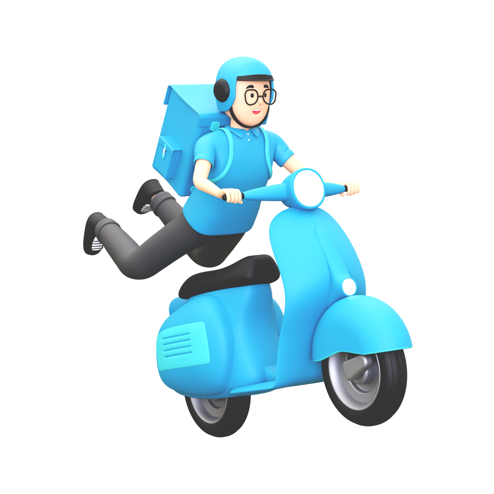

<ion-app>
  <ion-menu side="start" menuId="first" contentId="content">
    <ion-header>
      <ion-toolbar class="menu_custom">
        <ion-title class="ion-text-center">Menu</ion-title>
      </ion-toolbar>
    </ion-header>

    <ion-content>
      <!-- This part is to move to the other pages -->
      <div *ngIf="!fleets?.length || !driv_acc_email">
      <div *ngFor="let p of pages1" class="menu_pages">
        <ion-menu-toggle *ngIf="p.url">
          <ion-item [routerLink]="p.url" routerDirection="root" routerLinkActive="active" lines="none">
            <ion-icon [name]="p.icon" slot="start"></ion-icon>
            <ion-label class="ion-text-center">{{ p.title }}</ion-label>
          </ion-item>
        </ion-menu-toggle>

        <ion-item
          button
          *ngIf="p.children?.length > 0"
          (click)="p.open = !p.open"
          [class.active-parent]="p.open"
          detail="false"
          lines="none"
        >
          <ion-icon slot="start" name="albums" *ngIf="!p.open"></ion-icon>
          <ion-icon slot="start" name="albums-outline" *ngIf="p.open"></ion-icon>
          <ion-label class="ion-text-center">{{ p.title }}</ion-label>
        </ion-item>

        <ion-list *ngIf="p.open" lines="none" class="menu_pages">
          <ion-menu-toggle>
            <ion-item *ngFor="let sub of p.children" [routerLink]="sub.url" routerDirection="root" routerLinkActive="active">
              <ion-icon [name]="sub.icon" slot="start"></ion-icon>
              <ion-label class="ion-text-center"> {{ sub.title }} </ion-label>
            </ion-item>
          </ion-menu-toggle>
        </ion-list>
      </div>
    </div>
    <div *ngIf="driv_acc_email">
      <div *ngFor="let p of pages2" class="menu_pages">
        <ion-menu-toggle *ngIf="p.url">
          <ion-item [routerLink]="p.url" routerDirection="root" routerLinkActive="active" lines="none">
            <ion-icon [name]="p.icon" slot="start"></ion-icon>
            <ion-label class="ion-text-center">{{ p.title }}</ion-label>
          </ion-item>
        </ion-menu-toggle>

        <ion-item
          button
          *ngIf="p.children?.length > 0"
          (click)="p.open = !p.open"
          [class.active-parent]="p.open"
          detail="false"
          lines="none"
        >
          <ion-icon slot="start" name="albums" *ngIf="!p.open"></ion-icon>
          <ion-icon slot="start" name="albums-outline" *ngIf="p.open"></ion-icon>
          <ion-label class="ion-text-center">{{ p.title }}</ion-label>
        </ion-item>

        <ion-list *ngIf="p.open" lines="none" class="menu_pages">
          <ion-menu-toggle>
            <ion-item *ngFor="let sub of p.children" [routerLink]="sub.url" routerDirection="root" routerLinkActive="active">
              <ion-icon [name]="sub.icon" slot="start"></ion-icon>
              <ion-label class="ion-text-center"> {{ sub.title }} </ion-label>
            </ion-item>
          </ion-menu-toggle>
        </ion-list>
      </div>
    </div>
    </ion-content>
  </ion-menu>

  <div class="ion-page" id="content">
    <ion-header>
      <ion-toolbar>
        <ion-buttons slot="start">
          <ion-menu-button></ion-menu-button>
        </ion-buttons>

        <ion-title class="title"> {{ 'WELCOME_TITLE' | translate }}, {{account?.firstName}} </ion-title>

        <ion-buttons slot="end">
          <ion-button (click)="logout()" id="logout">
            {{ 'LOGOUT_TITLE' | translate }}
            <ion-icon slot="end" name="log-out"></ion-icon>
          </ion-button>
        </ion-buttons>
      </ion-toolbar>
    </ion-header>

    <ion-content scroll-y="false" class="ion-padding">
      <div class="screen__background_back">
        <span class="screen__background__shape screen__background__shape4_back"></span>
        <span class="screen__background__shapesmsv5/src/app/pages/home/home.page.ts screen__background__shape3"></span>
        <span class="screen__background__shape screen__background__shape2"></span>
        <span class="screen__background__shape screen__background__shape1"></span>
      </div>

      <div text-center style="height: 45%">
        
      </div>

      <!--<swiper #swiper [config]="config" (slideChange)="swiperSliderChanged($event)">
        <ng-template swiperSlide *ngFor="let img of images">
          
        </ng-template>
      </swiper>
      &nbsp; &nbsp;-->

      <div class="set_pos">
        <h1>Tasks Offered</h1>

        <div *ngIf="!fleets?.length || !driv_acc_email">
          <ion-buttons class="button login__submit" type="submit" id="login" routerLink="/tabs/fleet/new">
            <ion-icon name="person-outline" class="bags"></ion-icon>&nbsp;&nbsp;&nbsp;
            <span class="button__text">Fill Driver Details</span>
          </ion-buttons>
        </div>
        <div *ngIf="driv_acc_email">

          <ion-buttons class="button login__submit" type="submit" id="login" routerLink="/tabs/parcel">
            <ion-icon name="bag-check-outline" class="bags"></ion-icon>&nbsp;&nbsp;&nbsp;
            <span class="button__text">Jobs Assigned</span>
          </ion-buttons>

          <ion-buttons class="button login__submit" type="submit" id="login" routerLink="/tabs/driverstats">
            <ion-icon name="stats-chart-outline" class="bags"></ion-icon>&nbsp;&nbsp;
            <span class="button__text">Check Stats</span>
          </ion-buttons>

          <ion-buttons class="button login__submit" type="submit" id="login" routerLink="/tabs/fleet/{{drivid}}/edit">
            <ion-icon name="person-outline" class="bags"></ion-icon>&nbsp;&nbsp;&nbsp;
            <span class="button__text">Emergency Status</span>
          </ion-buttons>
        </div>
      </div>
    </ion-content>
  </div>
</ion-app>
